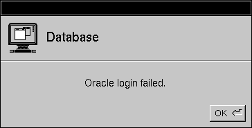

Release 3.3 Copyright ©1995 by NeXT Computer, Inc. All Rights Reserved.
| 7 |
Connecting to the Server
| You can read a model into a DBDatabase object and examine the modeling objects it contains without being connected to a database server. But the ultimate use of modeling objects is to configure data-storing objects so the latter can fetch and store data from the server (as explained in the next chapter). However, in order to fetch data, your application must first form a connection to the database server that's providing the data.
This chapter describes the methods that the DBDatabase class defines that let you connect to a database server. |
| The Adaptor Name and Login String |
| To connect to a server you must supply an adaptor name and a login string: |
| The adaptor name is a string that identifies the adaptor file that implements the connection to the server. The name is given without a path name or extension. When a connection is attempted, the appropriate adaptor file is searched for in the following directories (in this order): | ||
| Most adaptors require that the user log in to the server. The login string provides server-specific login information that's used when the connection is being forged. The format of this string is the same as in the ASCII model file: | ||
| A DBDatabase object contains default settings for these strings which it reads from the model that it represents. You can retrieve these defaults by sending the messages defaultAdaptorName and defaultLoginString to your DBDatabase object. In some cases, you may want to specify a non-default adaptor or login string; you do this by passing your values as arguments to a connection-forming method (as described in the next section).
When the connection to a server is successfully formed, the DBDatabase object records the adaptor name and login string values that were used. You can retrieve the values of the current settings through the currentAdaptorName and currentLoginString methods. |
| The Connection Methods |
| The simplest way to connect your DBDatabase object to the underlying server is to pass YES as the second argument to findDatabaseNamed:connect:. The method attempts a connection to the server using the DBDatabase object's default adaptor name and login string values as guides. The adaptor will almost certainly put up its login panel with all but the password field filled in, thus allowing the user to supply the password. See the section "Suppressing the Login Panel," below, if you're creating an application that doesn't use windows, or if you want to control the login information yourself.
The connect method follows the connection rules used by findDatabaseNamed:connect:. Specifically, it attempts a connection using the default adaptor name and login string information. You should only need to use the connect method if you've passed NO as the second argument to findDatabaseNamed:connect:. The connectUsingAdaptor:andString: is the "master" connection method. It lets you specify the adaptor name and login string as arguments. If the connection is successful, the method sets the current adaptor and login settings to the arguments that you passed (the default settings aren't changed). In general, you should only need to use this method if you want to specify a non-default login string. An attempt to connect through the "wrong" adaptor--in other words, through an adaptor other than that upon which the model was based--is almost certain to fail.
Disconnecting To disconnect a DBDatabase, you can send it a disconnect or disconnectUsingString: message. The argument to the latter is a string that contains an arbitrary statement that's evaluated by the adaptor just before the connection is severed. In addition, an application's connection is automatically severed when the application itself is terminated. You should note that you can't disconnect a DBDatabase by passing NO as the second argument to the findDatabaseNamed:connect: method. If the object that's found by the method is already connected, it will remain connected regardless of the second argument value that you pass. Because connecting to a server can be time-consuming, many application never explicitly disconnect: They connect when they're launched and remain connected thereafter. However, connection "contexts" can be precious commodities. Many server licenses allow only a certain number of connections at a time. In such a case, disconnecting when your application isn't actively moving data to or from the server may be the expedient thing to do if connections are limited.
Connection State To determine if a DBDatabase object is currently connected to its server, you send it an isConnected message. In reply, the method returns a boolean value. The connect and connectUsingAdaptor:andString: methods also return booleans that can mistakenly be taken to indicate connection status. But don't be fooled: The value tells you whether a particular invocation of one of these methods successfully formed a connection. If, for example, a DBDatabase is already connected when it receives a connect message, the return value for the message will be NO (and the object will remain connected). |
| Suppressing the Login Panel |
| If you're creating a command line program--or any application that doesn't use windows--then you certainly won't want the adaptor to put up its login panel. To suppress the panel, you send your DBDatabase object a setPanelsEnabled: message, passing NO as the argument, before you tell it to connect. Obviously, this means that you also have to pass NO as the second argument to the previous findDatabaseNamed:connect: method, as shown in the following example: |
 DBDatabase *db = [DBDatabase findDatabaseNamed:"myModel" connect:NO];
DBDatabase *db = [DBDatabase findDatabaseNamed:"myModel" connect:NO];
 [db setPanelsEnabled:NO];
[db setPanelsEnabled:NO];
 [db connect];
[db connect];
| With panels disabled, the Oracle and Sybase adaptors use the entire login string--including the password--when a connection is attempted. The user isn't prompted to verify the password or otherwise supply any login information. This isn't a requirement, however, so other adaptors may ask the user for authentication (through a command line prompt, for example).
Attention Panels The adaptor's login panel isn't the only window that a DBDatabase may cause to be displayed. The DBDatabase itself, by default, displays an attention panel when a server error is encountered. For example, if an attempted connection fails, the following panel (or one like it) will appear: |
|  |
| Figure 74. DBDatabase's Attention Panel
This attention panel can be disabled through the setPanelsEnabled: method (by passing NO as the argument). |